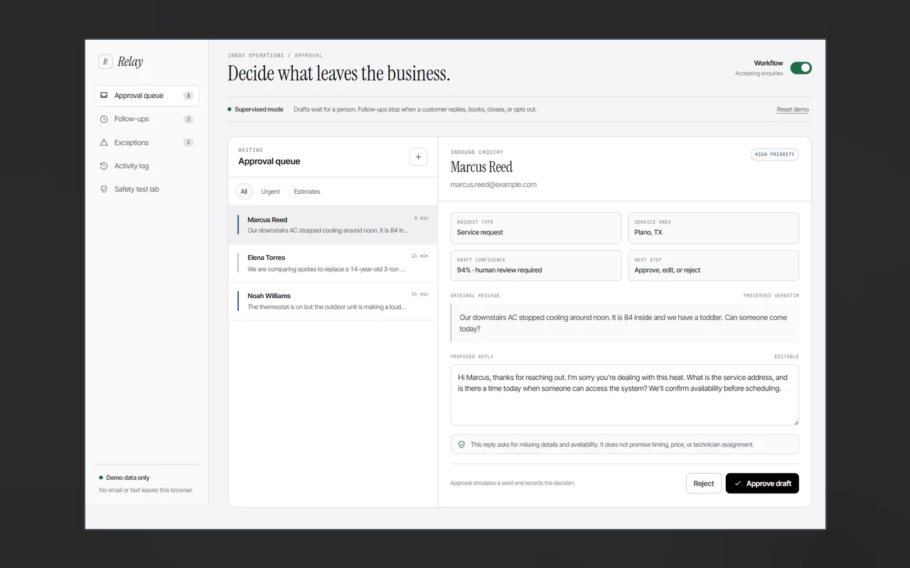
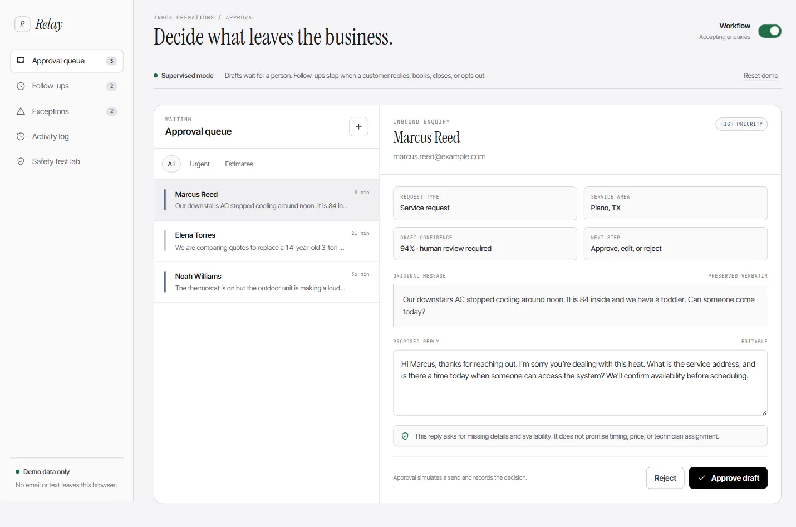
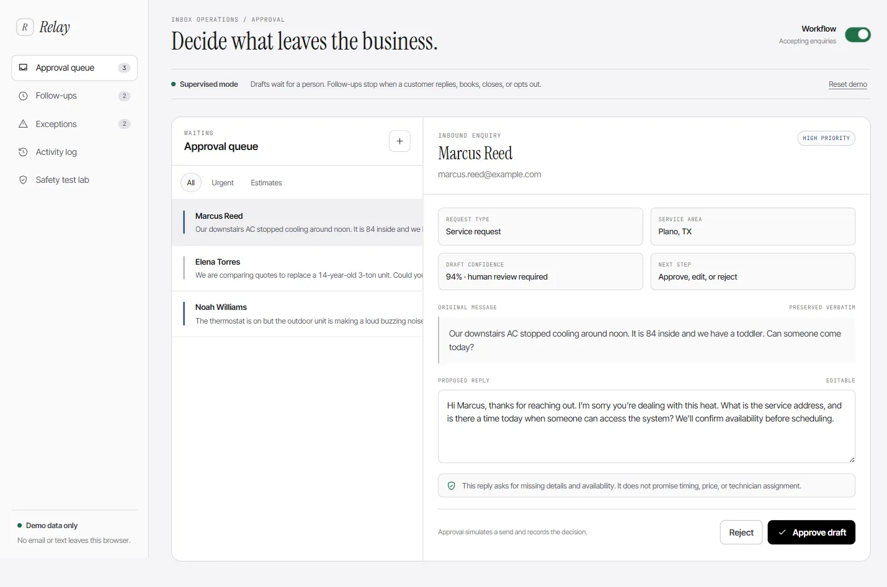

Relay Inbox
Supervised inbox-agent demo built around organization, urgency, and reply approval.

ORIGINAL PROJECT MATERIALPROJECT / BUSINESS
01 / DESCRIPTION
What it is.
Relay Inbox is a supervised inbox demonstration that categorizes messages and drafts responses.
02 / EXPLANATION
What it does.
- Cluster correspondence by useful topics.
- Flag urgent items independently of their topic.
- Draft replies according to business instructions.
- Require human approval before sending.
How it works.
The app groups messages by the topics in their conversation, flags urgent cases separately, and lets a business specify how replies should be written. Suggested replies need human approval before sending.
03 / DEMONSTRATION
See it in action.
Captured screens show the local demo. The messages are synthetic, not a connected customer inbox.




Scope: Uses synthetic demo data; should not be presented as a deployed customer inbox.